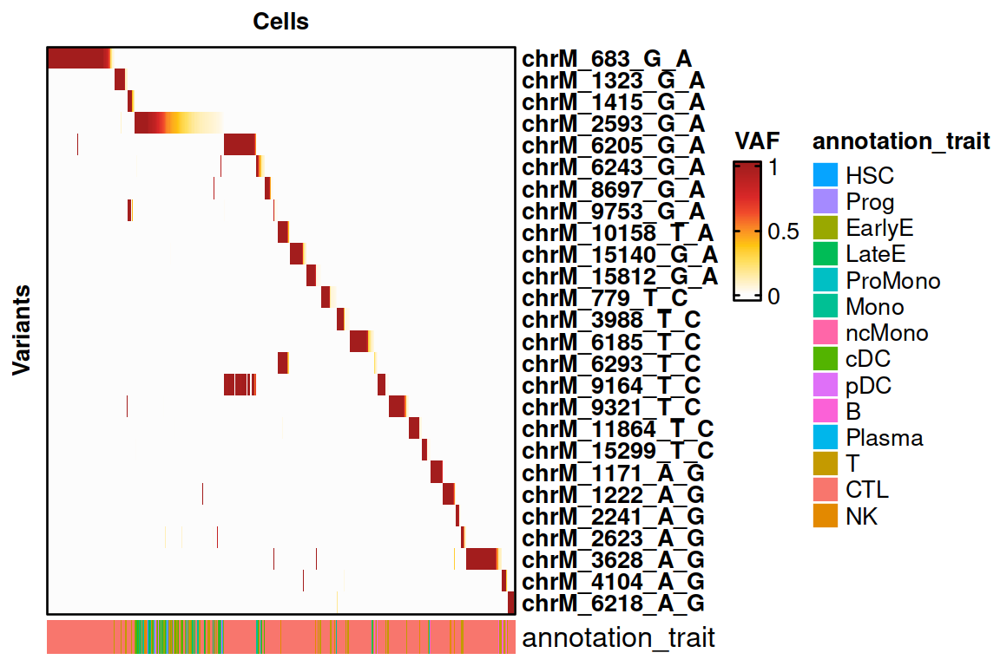
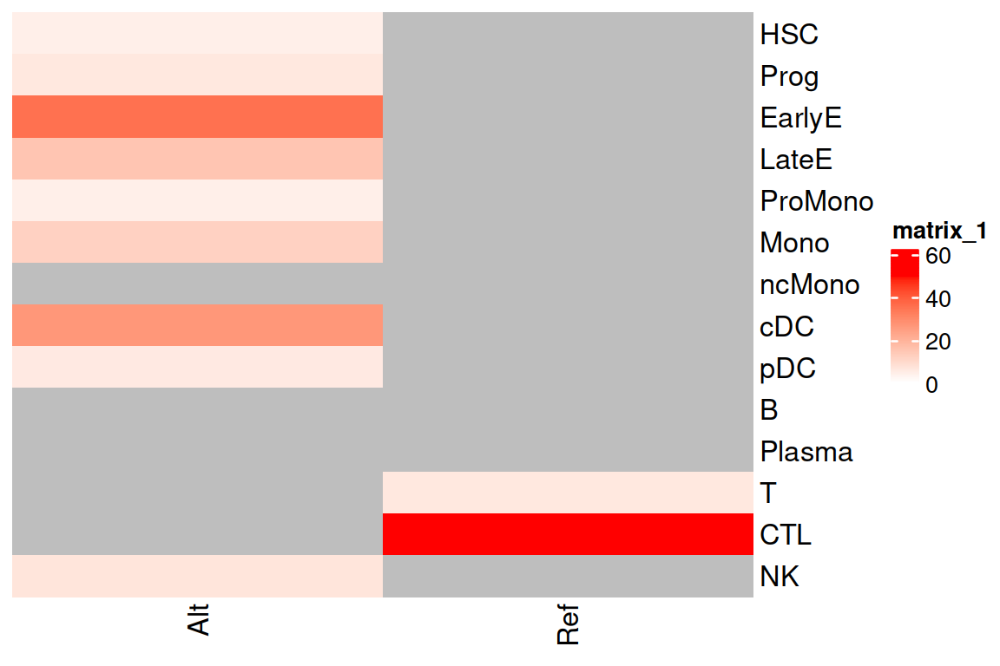

Analysis of Blastic Plasmacytoid Dendritic Cell Neoplasm (BPDCN)
BoneMarrow_SIGURD.RmdAnalysis of Blastic Plasmacytoid Dendritic Cell Neoplasm (BPDCN)
Here, we compare the analysis of cells from a patient with BPDCN.
The original script is available here: https://github.com/petervangalen/MAESTER-2021/blob/main/4_CH_sample/4.2_Variant_Selection.R
In this setup, the cells are all from a single donor and do not have to be separated into categories.
Then small clones that might characterize the clonal lineages in the sample are selected.
Loading necessary packages.
We load the data from MAESTER.
print("Libraries for SIGURD.")## [1] "Libraries for SIGURD."Loading the data using SIGURD.
# The design matrix contains information for the genotyping data.
genotyping <- LoadingMAEGATK_typewise(patient = "BPDCN712", samples_file = "/data/MPN/exp/scRNA/MPN_mutations/SIGURD_paper/sigurd/data/MAESTER_Reproduction.csv", type_use = "Amplicon_MT", verbose = FALSE)
# Loading the scRNA-seq data.
scrna <- readRDS("/data/MPN/exp/scRNA/MPN_mutations/SIGURD_paper/sigurd/data/BPDCN712_Seurat_with_TCR_Renamed.rds")Generating a block list
Variants that are also detected in the cell mixture data is treated as possible false positives. They are used as a blacklist and are removed from the results.
# Loading the TenX Cell Mixture Genotyping.
genotyping_tenx <- load_object("/data/MPN/exp/scRNA/MPN_mutations/SIGURD_paper/sigurd/data/TenX_CellMixture_Genotyping.rds.lz4")
blocklist <- AllelFrequencyFoldChange(genotyping_tenx, group_of_interest = "CellType", group1 = "K562", group2 = "BT142", maximum_foldchange = 5, minimum_coverage = 5, minimum_allele_freq = 0.001, maximum_allele_freq = 0.999)$Variant
# We add the variant chrM_1583_A_G by hand. It is identified as misleading based on downstream analysis.
blocklist <- c(blocklist, "chrM_1583_A_G")Selecting the Variants of Interest
Now, we select the variants of interest from the loaded data.
voi.ch.sigurd <- VariantSelection_TopCells(genotyping, min_coverage = 5, quantiles = 0.9, thresholds = 0, top_cells = 10, top_VAF = 0.5, min_quality = 30, remove_nocall = FALSE, verbose = FALSE)
voi.ch.sigurd <- voi.ch.sigurd[!voi.ch.sigurd %in% blocklist]
print(voi.ch.sigurd)## [1] "chrM_683_G_A" "chrM_1323_G_A" "chrM_1415_G_A" "chrM_2593_G_A"
## [5] "chrM_6205_G_A" "chrM_6243_G_A" "chrM_8697_G_A" "chrM_9753_G_A"
## [9] "chrM_10158_T_A" "chrM_15140_G_A" "chrM_15812_G_A" "chrM_779_T_C"
## [13] "chrM_3988_T_C" "chrM_6185_T_C" "chrM_6293_T_C" "chrM_9164_T_C"
## [17] "chrM_9321_T_C" "chrM_11864_T_C" "chrM_15299_T_C" "chrM_1171_A_G"
## [21] "chrM_1222_A_G" "chrM_2241_A_G" "chrM_2623_A_G" "chrM_3628_A_G"
## [25] "chrM_4104_A_G" "chrM_6218_A_G"Visualisation using SIGURD
## [1] "We remove all cells not in the allow list."
## [1] "We remove all the variants that are always NoCall."
colData(genotyping)$CellType <- scrna$CellType
HeatmapVoi(SE = genotyping, voi = voi.ch.sigurd, annotation_trait = "CellType", sort_cells = TRUE, remove_empty_cells = TRUE, minimum_allele_freq = 0.01)
Cell Type Enrichment 2593G>A
We check the cell type enrichment for the variant 2593G>A.
result_enrichment <- Enrichment_FisherTest(se = genotyping, variant = "chrM_2593_G_A", use_nocall = FALSE, trait = "CellType")## [1] "We get a count matrix of the chrM_2593_G_A per CellType."
ComplexHeatmap::Heatmap(as.matrix(result_enrichment$Heatmap_Values), cluster_rows = FALSE, cluster_columns = FALSE, col= circlize::colorRamp2(c(0, max(result_enrichment$Heatmap_Values, na.rm = TRUE)), c("white", "red")))
Cell Type Enrichment 6243G>A
We check the cell type enrichment for the variant 6243G>A.
result_enrichment <- Enrichment_FisherTest(se = genotyping, variant = "chrM_6243_G_A", use_nocall = FALSE, trait = "CellType")## [1] "We get a count matrix of the chrM_6243_G_A per CellType."Enrichment with somatic variants
We get the number of 2593_G>A cells that are also mutated for a different somatic variant.
somatic_variants <- c("ASXL1.G642fs.1", "ASXL1.G642fs.2", "TET2.S792X", "TET2.Q1034X", "TET2.R1216X", "TET2.H1380Y")
variants <- LoadingRawMatrix_typewise(samples_file = "/data/MPN/exp/scRNA/MPN_mutations/SIGURD_paper/sigurd/data/MAESTER_Reproduction.csv", patient = "BPDCN712", variant_use = somatic_variants, matrix_column_separator = "\t", verbose = FALSE)
genotyping <- genotyping[voi.ch.sigurd, ]
genotyping <- Filtering(genotyping, cells_include = colnames(variants))## [1] "We remove all cells not in the allow list."
## [1] "We remove all the variants that are always NoCall."
variants <- Filtering(variants, cells_include = colnames(scrna), fraction_threshold = 0.01, reject_value = "Reference")## [1] "We remove all cells not in the allow list."
## [1] "We assume that cells with a fraction smaller than our threshold are actually Reference."
## [1] "We set consensus values to 1 (Reference) and fraction values to 0."
## [1] "We do not set fractions between 0.01 and 1 to 1."
## [1] "This way, we retain the heterozygous information."
## [1] "We remove all the variants that are always NoCall."
genotyping <- CombineSEobjects(se_1 = genotyping, se_2 = variants)
genotyping <- ClonalDefinition(se = genotyping, variants_ls = list("chrM_2593_G_A"), grouping = NULL, identities = NULL, explicit = TRUE, explicit_not = list("chrM_6243_G_A"), explicit_min_vaf = 0.01, verbose = TRUE)## [1] "Explicit clone definition."
genotyping <- genotyping[, genotyping$Clones == "C1"]
res <- VariantWiseFisherTest(variants_list = RowWiseSplit(se = genotyping))## [1] "Testing Variant: ASXL1.G642fs.1, 1 out of 6"
## [1] "Testing Variant: ASXL1.G642fs.2, 2 out of 6"
## [1] "Testing Variant: TET2.S792X, 3 out of 6"
## [1] "Testing Variant: TET2.Q1034X, 4 out of 6"
## [1] "Testing Variant: TET2.R1216X, 5 out of 6"
## [1] "Testing Variant: TET2.H1380Y, 6 out of 6"
## [1] "We remove the NA P values."
## [1] "Adjusting P values using fdr."
knitr::kable(res, format="html")| Variant1 | Variant2 | P | OddsRatio | Cells_Alt_1_2 | Cells_Alt_1_Ref_2 | Cells_Alt_2_Ref_1 | Cells_Ref_1_2 | P_adj |
|---|---|---|---|---|---|---|---|---|
| ASXL1.G642fs.2 | chrM_2593_G_A | 1 | 0 | 3 | 0 | 2 | 0 | 1 |
| TET2.S792X | chrM_2593_G_A | 1 | 0 | 7 | 0 | 9 | 0 | 1 |
| TET2.S792X | chrM_15299_T_C | 1 | 0 | 0 | 1 | 1 | 7 | 1 |
| TET2.Q1034X | chrM_2593_G_A | 1 | 0 | 3 | 0 | 6 | 0 | 1 |